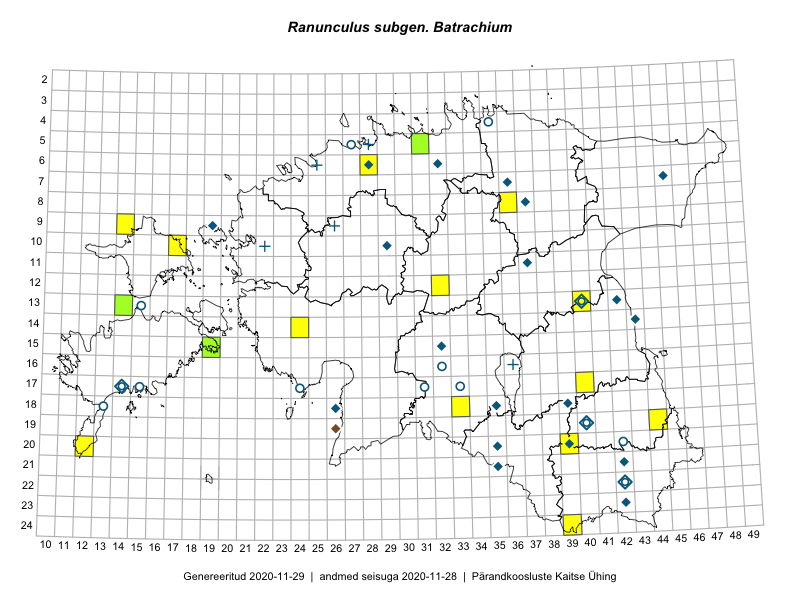

Ranunculus subgen. Batrachium — särjesilm
Ranunculaceae :: Batrachium (DC.) Gray (16); Batrachium divaricatum (Schrank) Schur (7); Ranunculus divaricatus Schrank (4); Ranunculus heterophyllus Web. (1)

Kaart põhineb 28 kirjel:
vaatlusi 20
herbaareksemplare 8
Taime kaasaegsed ja ajaloolised leiukohad asuvad 27 ruudus.
Tingmärgid ja ruutude arvud periooditi (U1 / V2 )
█ 2006–2020 (7/–)
◆/◇ 1971–2005 (7/0)
○ 1921–1970 (10/0)
+ kuni 1920 (4/0)
× hävinud (–/0)
? kaheldav (–/0)
| Ruut | Leidja(d) | Leiuaeg | Kirje |
|---|---|---|---|
| 07-36 | M. Kask, L. Viljasoo | 1980-09-10 | ruut/ala: Batrachium (DC.) Gray |
| 08-37 | M. Kask | 1974-06 | ruut/ala: Batrachium (DC.) Gray |
| 09-19 | botaaniline ekspeditsioon ZBI | 1982-06-08 | ruut/ala: Batrachium (DC.) Gray |
| 10-29 | L. Viljasoo | 1988-07 | ruut/ala: Batrachium divaricatum (Schrank) Schur |
| 13-15 | H. Krall | 1958-06-11 | ruut/ala: Batrachium (DC.) Gray |
| 15-32 | botaaniline ekspeditsioon ZBI | 1983-06-21 | ruut/ala: Batrachium (DC.) Gray |
| 16-32 | A. Tamsalu | 1939-06 | ruut/ala: Batrachium divaricatum (Schrank) Schur |
| 17-14 | B. Saarsoo | 1937–1938 | ruut/ala: Batrachium (DC.) Gray |
| 17-14 | M. Kask, L. Laasimer | 1977-08 | ruut/ala: Batrachium (DC.) Gray |
| 17-31 | A. Tamsalu | 1940-06–1940-08 | ruut/ala: Batrachium divaricatum (Schrank) Schur |
| 18-26 | V. Kuusk | 1980-06-30 | ruut/ala: Batrachium (DC.) Gray |
| 17-33 | A. Tamsalu | 1939-07 | ruut/ala: Batrachium divaricatum (Schrank) Schur |
| 18-13 | A. Tomson | 1934 | ruut/ala: Batrachium (DC.) Gray |
| 05-27 | H. Salasoo | 1934–1936 | ruut/ala: Batrachium divaricatum (Schrank) Schur |
| 19-44 | Thea Kull, Meeli Mesipuu | 2015-08-12 | ruut/ala: Batrachium (DC.) Gray |
| 20-12 | Oliver Parrest | 2015-08-15 | ruut/ala: Batrachium (DC.) Gray |
| 24-39 | Maret Gerz, Liina Oja | 2016-06-14 | ruut/ala: Batrachium (DC.) Gray |
| 10-17 | Eeva-Maria Jeletsky, Tarmo Niitla | 2016-07-14 | ruut/ala: Batrachium (DC.) Gray |
| 12-32 | Thea Kull, Raivo Kalle, Susanna Vain | 2016-07-21 | ruut/ala: Batrachium (DC.) Gray |
| 14-24 | Aat Sarv, Oliver Parrest | 2016-07-18 | ruut/ala: Batrachium (DC.) Gray |
| 06-25 | G. Pahnsch | 1875-08-08 | TAM0121602: Ranunculus divaricatus Schrank |
| 05-28 | G. Pahnsch | 1875-07-03 | TAM0121604: Ranunculus divaricatus Schrank |
| 09-26 | G. Pahnsch | 1878-07-09 | TAM0121609: Ranunculus divaricatus Schrank |
| 16-36 | G. Pahnsch | 1878-07-22 | TAM0121617: Ranunculus divaricatus Schrank |
| 04-35 | T. Lippmaa | 1932-07-21 | TU313000: Ranunculus heterophyllus Web. |
| 17-15 | A. Vaga | 1931-07-03 | TU313006: Batrachium divaricatum (Schrank) Schur |
| 13-14 | Toomas Kukk, Eerik Leibak | 2015-08-10 | TAA0135619: Batrachium (DC.) Gray |
| 17-24 | T. Lippmaa | 1930-06-18 | TU312937: Batrachium divaricatum (Schrank) Schur |
Ruutude arv uue atlase andmekogu järgi. Muuhulgas arvestab vanemat herbaariumi, 2005. aasta atlase välitöölehtedelt uuesti digitaliseeritud andmeid jne. Uue atlase andmekogust pärinevad andmed on kaardile kantud siniste sümbolitega.↩︎
Ruutude arv 2005. aasta atlase (Kukk, T., Kull, T., Eesti taimede levikuatlas. Eesti Maaülikool, Põllumajandus- ja Keskkonnainstituut, Tartu, 2005) järgi. Andmeallikana on kasutatud levik.exe programmi, kus igas ruudus on registreeritud vaid uusim leid. Seetõttu on vanemate perioodide kohta andmed puudulikud. Kasutatud levik.exe andmestikus leidub mõningaid kõrvalekaldeid atlase trükis ilmunud versioonist, sagedamini tarnade ja käpaliste seas. Lisaks leidub selles andmestikus valik liike (peamiselt väheste leidudega tulnuktaimed), mille kaarte trükis ei avaldatud. Vana atlase andmed ruutudest, milles ei ole uue atlase andmekogus leide enne 2006. aastat, on kaardil esitatud punaste sümbolitega. Vana atlase andmetel hävinud ja kaheldavaid leiukohti pole hilisemate (taas)leidude põhjal korrigeeritud.↩︎